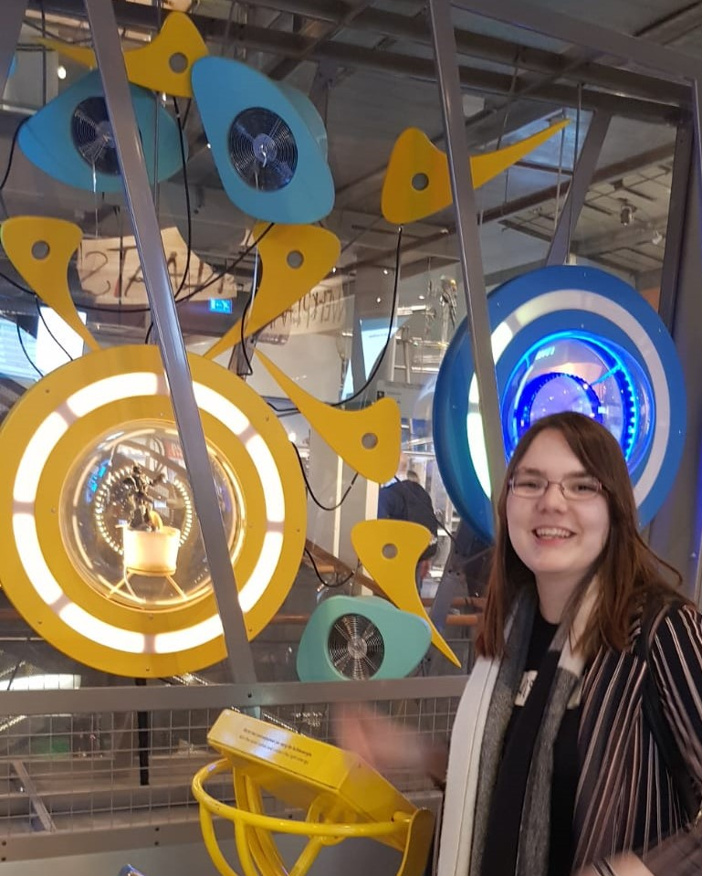

Op maandag 26 mei ben ik met medestudenten op excursie gegaan in Amsterdam. Voor de excursie zijn wij naar het NEMO Science Museum gegaan. In dit museum worden complexe onderwerpen in wetenschap en technologie op een leuke beschikbaar gemaakt voor een breed publiek.
Voor de bijbehorende opdracht heb ik de interactieve installatie ‘Energize’ gekozen. Het doel van deze installatie is om zoveel mogelijk energie vanuit licht, wind en water te halen om verschillende objecten in beweging te krijgen. Hoe efficiënter dit wordt gedaan, hoe sneller je deze kan laten bewegen.
Ik heb gekozen om me te focussen op een van de drie ‘sturen’ waarmee je dit voor elkaar krijgt, in dit geval degene die met licht werkt. Deze bestaat uit een stuur met zonnepaneel, verschillende lampen die aan en uit knipperen, en een aantal objecten die bewegen zodra je energie opwekt. Energie opwekken doe je door het zonnepaneel te richten op een lamp wanneer deze aan knippert, je krijgt feedback hoever je bent met het opladen d.m.v. de lichten in de ring recht voor je. Het zonnepaneel is de sensor. Zodra je genoeg energie hebt opgewekt zorgen de actuators ervoor dat de verschillende objecten gaan draaien.
Hieronder staat een filmpje van de installatie in actie.